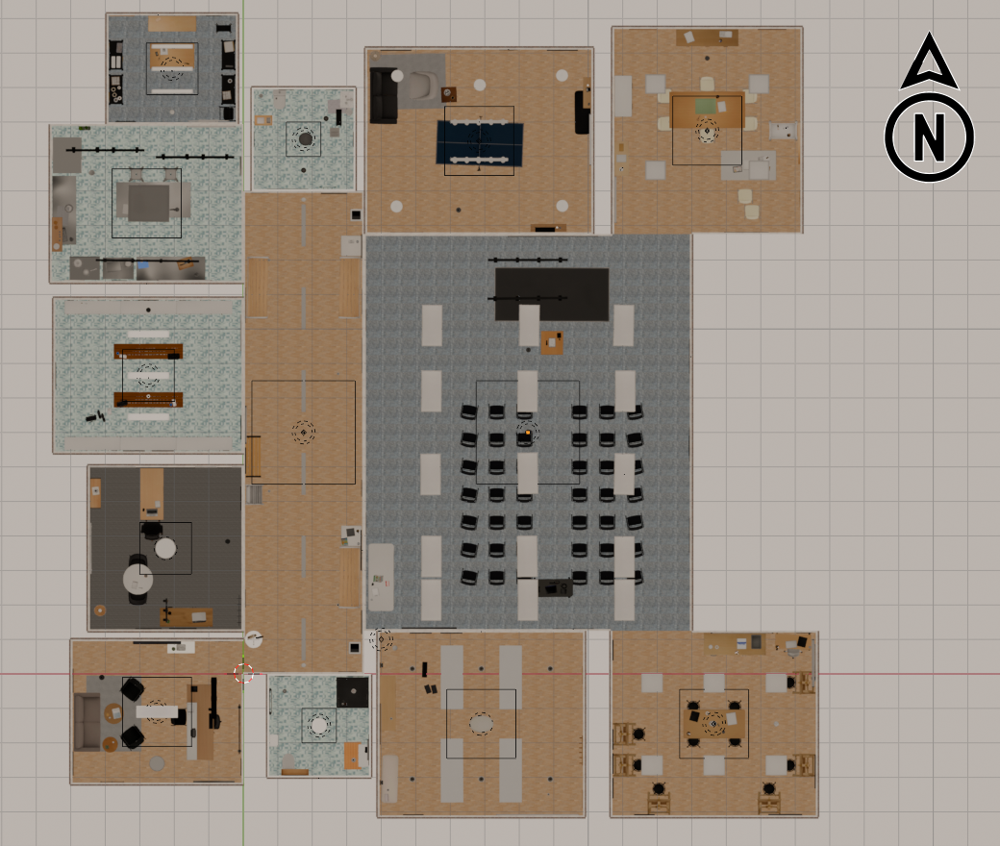
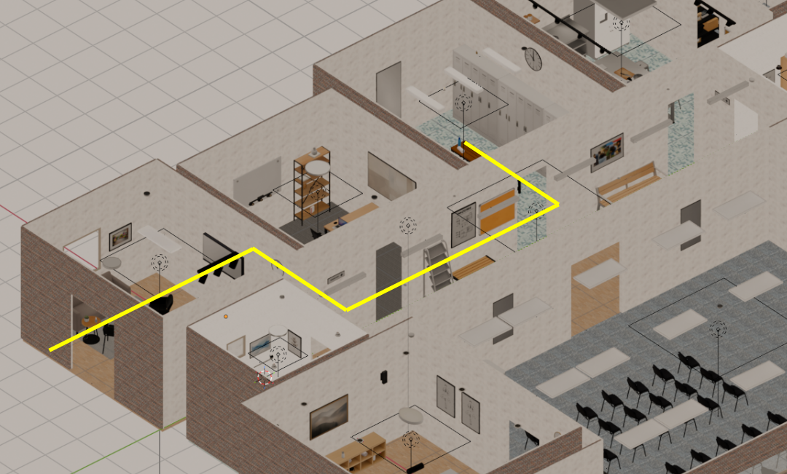
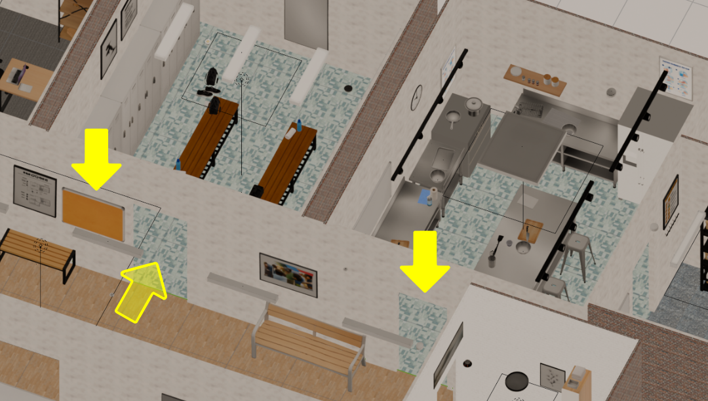
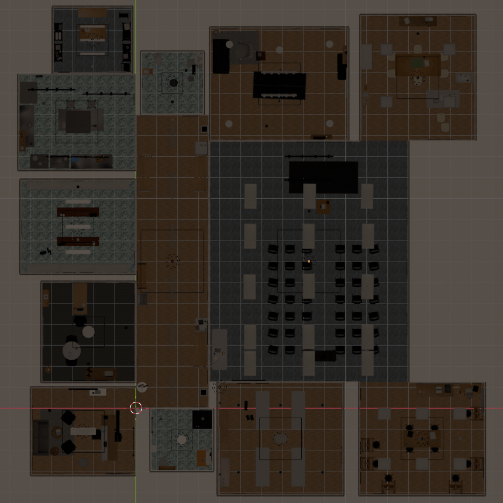

Research · 2026
A protocol for AI agents to understand the physical world — enabling LLMs to navigate buildings, identify locations, and control their environment in real time.
Overview — 01
The Spatial Context Protocol (SCP) enables any building to be represented as a compact, LLM-interpretable spatial model. Lightweight enough to run on modest hardware, the model grounds an AI agent in the physical world — giving it native understanding of position, routes, visual landmarks, and live state within a space.
As buildings increasingly expose programmatic interfaces — sensors, lighting systems, access control, climate — SCP provides the layer through which agents natively understand and act within them. Rather than treating building control as a bolt-on integration, SCP unifies spatial reasoning and system control.
An agent can observe live state, answer natural language queries, and operate building systems in real time, without a database or vector store.
The spatial model is the only thing that changes between buildings. Author a model for a new location and the same agent is immediately deployable there — no additional infrastructure required.

Examples — 02
Three examples using the 13-room building shown above, each demonstrating a distinct capability of the SCP agent.



Building the spatial model — 03
A building is described to the system from simple inputs — a walkthrough video, photographs, or a basic floorplan. The generated spatial model is compact, human-readable, and maintainable without specialist tooling.
01 — INPUTS
Simple source materials
A walkthrough video, photographs, or an existing floorplan. No specialist survey equipment or BIM software required.
02 — MODEL
Compact spatial model
Human-readable model encoding rooms, routes, landmarks, and live system state. Authored once, maintained without specialist tooling.
03 — DEPLOY
Immediate deployment
Same agent, any building. Swap the spatial model to deploy to a new venue — no additional infrastructure or bespoke engineering.
SCP spatially grounds AI agents for the first time — enabling them to assist with genuinely 3D tasks, and marking a step toward agents that can inhabit and operate autonomously in the physical world.